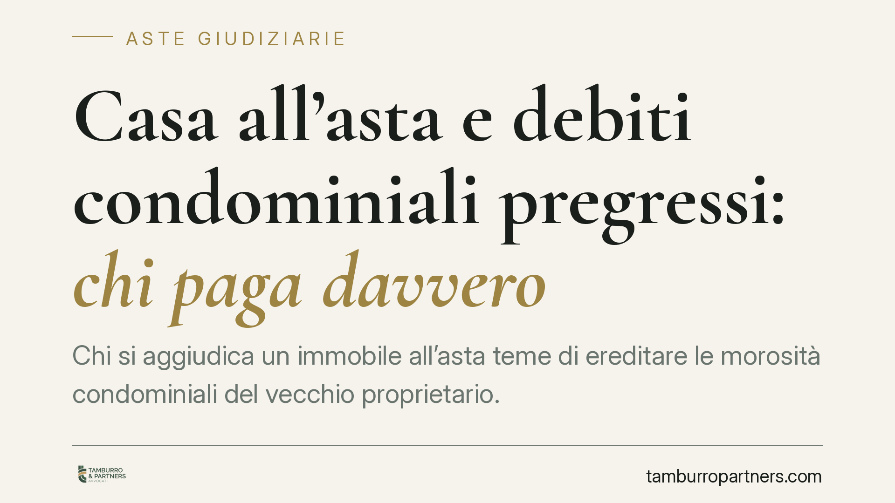

Casa all'asta e debiti condominiali pregressi: chi paga davvero
Chi si aggiudica un immobile all'asta teme di ereditare le morosità condominiali del vecchio proprietario. La regola è più circoscritta di quanto si creda: l'aggiudicatario risponde in solido solo per l'anno in corso e per quello precedente al decreto di trasferimento. I debiti più risalenti restano in capo all'esecutato. Conoscere i confini di questa responsabilità evita sorprese economiche e contenziosi con il condominio.

Il problema
Chi partecipa a un'asta immobiliare punta a un prezzo conveniente. Ma il vantaggio può ridursi se, subito dopo l'aggiudicazione, il condominio presenta il conto delle rate arretrate lasciate dal precedente proprietario.
La domanda è ricorrente: l'aggiudicatario paga tutti i debiti condominiali pregressi o solo una parte? La risposta incide direttamente sulla convenienza dell'operazione.
Inquadramento normativo
La norma di riferimento è l'art. 63, comma 4, disp. att. c.c.: chi subentra nei diritti di un condomino è obbligato, in solido con chi cede, al pagamento dei contributi relativi all'anno in corso e a quello precedente.
"In solido" significa che il condominio può chiedere l'intera somma indifferentemente al nuovo o al vecchio proprietario. Chi paga può poi rivalersi sull'altro. La solidarietà, però, copre solo quel biennio: per i debiti anteriori l'aggiudicatario non è tenuto a nulla, e il condominio deve agire esclusivamente verso l'esecutato.
Nel contesto dell'asta il termine di riferimento è la data del decreto di trasferimento (art. 586 c.p.c.), l'atto con cui il giudice dell'esecuzione trasferisce la proprietà. È da quel momento che si conta a ritroso il biennio rilevante.
Un tassello spesso trascurato è l'art. 173-bis disp. att. c.p.c.: la perizia di stima allegata alla procedura deve indicare, tra l'altro, l'importo delle spese condominiali insolute relative all'ultimo biennio. L'aspirante acquirente ha quindi uno strumento per stimare in anticipo l'esposizione a suo carico.
Come si conta il biennio
La distinzione richiede attenzione. Rileva l'anno di gestione condominiale (di regola l'anno solare) in cui cade il decreto di trasferimento e quello immediatamente precedente.
Esempio: decreto emesso a marzo 2024. L'aggiudicatario può essere chiamato a rispondere in solido delle spese del 2024 (anno in corso) e del 2023 (anno precedente). Le morosità del 2022 e anni anteriori restano a carico del solo esecutato.
Un punto consolidato: ciò che conta è l'anno di approvazione del riparto in assemblea, non necessariamente quello in cui la spesa è stata materialmente sostenuta. Le spese straordinarie deliberate prima dell'aggiudicazione ma ripartite in un momento successivo possono generare incertezze applicative.
Implicazioni pratiche
Per chi acquista all'asta la conseguenza è duplice.
Da un lato, il rischio è limitato e prevedibile: non si eredita l'intera storia debitoria dell'immobile, ma solo un biennio ben definito.
Dall'altro, il condominio tende a rivolgersi per primo al nuovo proprietario, più facilmente reperibile e solvibile rispetto all'esecutato. È quindi realistico attendersi una richiesta di pagamento immediata, alla quale si potrà opporre la delimitazione temporale prevista dalla legge.
Chi paga in solido conserva il diritto di regresso verso il precedente proprietario. Sul piano pratico, però, il recupero verso un soggetto già sottoposto a esecuzione forzata è spesso difficile.
Cosa fare in concreto
- Leggete la perizia di stima prima di formulare l'offerta: l'art. 173-bis impone l'indicazione delle spese condominiali insolute del biennio. È il primo indicatore dell'esposizione.
- Richiedete all'amministratore una situazione contabile aggiornata, distinguendo con chiarezza le morosità per anno di competenza e per data di approvazione del riparto.
- Verificate le delibere di spese straordinarie approvate prima del decreto di trasferimento: possono incidere sull'importo dovuto.
- Contestate per iscritto ogni richiesta del condominio che ecceda l'anno in corso e quello precedente al decreto, richiamando l'art. 63, comma 4, disp. att. c.c.
- Valutate il regresso verso l'esecutato solo dopo un'analisi realistica della sua solvibilità.
Una verifica preliminare accurata trasforma un rischio potenziale in un dato quantificabile, da inserire nel calcolo di convenienza dell'operazione.
---
*Contributo informativo a cura di Tamburro & Partners - Avv. Giuseppe Tamburro. Non costituisce parere legale.*
Comprare bene all’asta si può.
Se vuoi acquistare un immobile all’asta in sicurezza o difendere un esecutato, scrivi allo studio. Ti rispondiamo entro un giorno lavorativo.